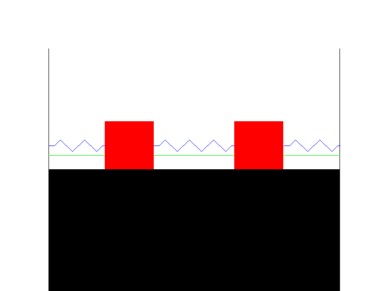

w7 <<
Previous Next >> W12
ANSIC
#include <stdio.h>
int main()
{
// 印出名字
printf("Name : Alexandra Abramov\n");
// 印出生日
printf("DOB : July 14, 1975\n");
// 印出手機號碼
printf("Mobile : 99-9999999999\n");
// 表示程式執行成功
return(0);
}

#include <stdio.h>
int main(int argc, char** argv) {
// 檢查C標準版本
#if __STDC_VERSION__ >= 201710L
printf("我們正在使用C18標準！\n");
#elif __STDC_VERSION__ >= 201112L
printf("我們正在使用C11標準！\n");
#elif __STDC_VERSION__ >= 199901L
printf("我們正在使用C99標準！\n");
#else
printf("我們正在使用C89/C90標準！\n");
#endif
// 表示程式執行成功
return 0;
}

#include <stdio.h>
int main()
{
// 打印一行井號
printf("######\n");
// 打印一個單獨的井號
printf("#\n");
// 打印一行井號
printf("#####\n");
// 打印一個單獨的井號
printf("#\n");
// 打印一個單獨的井號
printf("#\n");
// 打印一個單獨的井號
printf("#\n");
return(0);
}
#include <stdio.h>
int main()
{
// 宣告並初始化字符變數
char char1 = 'X';
char char2 = 'M';
char char3 = 'L';
// 印出原始順序和反轉順序的字符
printf("The reverse of %c%c%c is %c%c%c\n",
char1, char2, char3,
char3, char2, char1);
return(0);
}
The reverse of XML is LMX
#include <stdio.h>
/*
用於存儲矩形寬度和高度的變數（以英寸為單位）
*/
int width;
int height;
int area; /* 用於存儲矩形的面積的變數 */
int perimeter; /* 用於存儲矩形的周長的變數 */
int main() {
/* 賦值給高度和寬度 */
height = 7;
width = 5;
/* 計算矩形的周長 */
perimeter = 2 * (height + width);
printf("矩形的周長 = %d 英寸\n", perimeter);
/* 計算矩形的面積 */
area = height * width;
printf("矩形的面積 = %d 平方英寸\n", area);
return(0);
}
#include <stdio.h>
int main()
{
int a = 125, b = 12345; /* 宣告並初始化整數變數 */
long ax = 1234567890; /* 宣告並初始化長整數變數 */
short s = 4043; /* 宣告並初始化短整數變數 */
float x = 2.13459; /* 宣告並初始化浮點數變數 */
double dx = 1.1415927; /* 宣告並初始化雙精度浮點數變數 */
char c = 'W'; /* 宣告並初始化字符變數 */
unsigned long ux = 2541567890; /* 宣告並初始化無符號長整數變數 */
/* 不同資料型態之間的算術操作和型別轉換 */
printf("a + c = %d\n", a + c);
printf("x + c = %f\n", x + c);
printf("dx + x = %f\n", dx + x);
printf("((int) dx) + ax = %ld\n", ((int) dx) + ax);
printf("a + x = %f\n", a + x);
printf("s + b = %d\n", s + b);
printf("ax + b = %ld\n", ax + b);
printf("s + c = %hd\n", s + c);
printf("ax + c = %ld\n", ax + c);
printf("ax + ux = %lu\n", ax + ux);
return 0;
}
#include <stdio.h>
int main()
{
int a = 125, b = 12345; /* 宣告並初始化整數變數 */
long ax = 1234567890; /* 宣告並初始化長整數變數 */
short s = 4043; /* 宣告並初始化短整數變數 */
float x = 2.13459; /* 宣告並初始化浮點數變數 */
double dx = 1.1415927; /* 宣告並初始化雙精度浮點數變數 */
char c = 'W'; /* 宣告並初始化字符變數 */
unsigned long ux = 2541567890; /* 宣告並初始化無符號長整數變數 */
/* 不同資料型態之間的算術操作和型別轉換 */
printf("a + c = %d\n", a + c);
printf("x + c = %f\n", x + c);
printf("dx + x = %f\n", dx + x);
printf("((int) dx) + ax = %ld\n", ((int) dx) + ax);
printf("a + x = %f\n", a + x);
printf("s + b = %d\n", s + b);
printf("ax + b = %ld\n", ax + b);
printf("s + c = %hd\n", s + c);
printf("ax + c = %ld\n", ax + c);
printf("ax + ux = %lu\n", ax + ux);
return 0;
}
#include <stdio.h>
int main()
{
int days, years, weeks;
days = 1329; // 總天數
// 將天數轉換成年、週和剩餘的天數
years = days / 365; // 計算年數
weeks = (days % 365) / 7; // 計算週數
days = days - ((years * 365) + (weeks * 7)); // 計算剩餘的天數
// 印出結果
printf("年數: %d\n", years);
printf("週數: %d\n", weeks);
printf("天數: %d \n", days);
return 0;
}
#include <stdio.h>
int main()
{
int x, y, sum; // 宣告兩個整數和它們的總和的變數
// 提示使用者輸入並將結果存儲在 'x' 中
printf("\n輸入第一個整數: ");
scanf("%d", &x);
// 提示使用者輸入並將結果存儲在 'y' 中
printf("\n輸入第二個整數: ");
scanf("%d", &y);
sum = x + y; // 計算 'x' 和 'y' 的總和
// 印出總和
printf("\n上述兩個整數的總和 = %d\n", sum);
return 0; // 表示成功執行
}
#include <stdio.h>
int main()
{
int x, y, result; // 宣告兩個整數和它們的乘積的變數
// 提示使用者輸入並將結果存儲在 'x' 中
printf("\n輸入第一個整數: ");
scanf("%d", &x);
// 提示使用者輸入並將結果存儲在 'y' 中
printf("\n輸入第二個整數: ");
scanf("%d", &y);
result = x * y; // 計算 'x' 和 'y' 的乘積
// 印出乘積
printf("上述兩個整數的乘積 = %d\n", result);
}
w7 <<
Previous Next >> W12